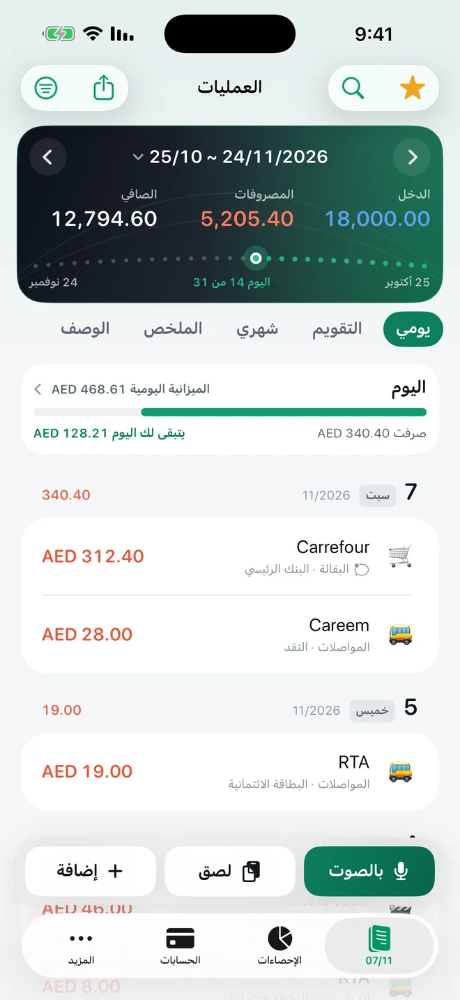
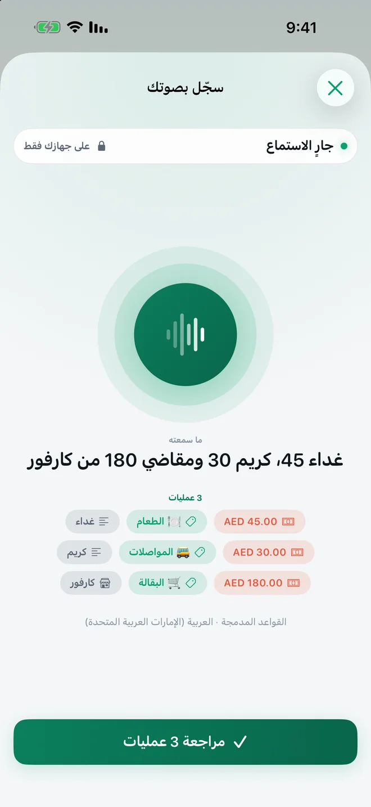
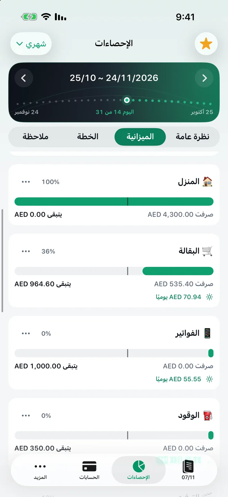
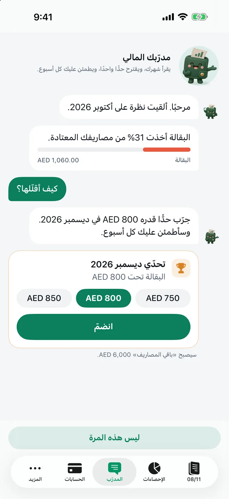

سجّل مصاريفك دون أن تكتب
رسائل البنك تُسجَّل وحدها، وجملة واحدة بصوتك تكفي لتسجيل عدة مصاريف، وشهرك يبدأ يوم الراتب. TrackExpenses تطبيق لتتبع المصاريف والميزانية على iPhone وiPad، بالعربية بالكامل ومن اليمين إلى اليسار.




رسائل البنك تُسجَّل وحدها
في الخليج ومصر يرسل البنك رسالة مع كل عملية شراء. أعدّ تحكمًا تلقائيًا في «الاختصارات» مرة واحدة، وستتحول هذه التنبيهات ومشتريات بطاقات المحفظة إلى عمليات في سجلّك، تراجعها متى شئت.
- يقرأ المبلغ والمتجر والتاريخ والبطاقة من الرسالة، بالعربية أو الإنجليزية، ويتجاهل رموز التحقق والعمليات المرفوضة والعروض.
- التطبيق لا يقرأ صندوق رسائلك ولا يتصل ببنكك. التحكم التلقائي الذي تعدّه أنت هو من يمرّر الرسالة المطابقة.
- أو الصق رسالة البنك بنفسك، وستُعبّأ التفاصيل لك.
- 10 رسائل مجانًا كل شهر ميلادي على كل جهاز، وبلا حدود مع Pro.
دليل الإعداد خطوة بخطوة، بصور من «الاختصارات» بالعربية
سجّل بصوتك
قل «قهوة 15، تاكسي 40 وبقالة 120 من كارفور البارحة»، وستجد ثلاث مسودات بمبالغها وفئاتها وتاريخها، تراجعها وتحفظها معًا. يفهم الأرقام كما تُقال، مثل «خمسة وعشرين» و«مية ونص»، ويعمل الاستماع على جهازك.
- 10 إدخالات صوتية محفوظة مجانًا كل شهر ميلادي على كل جهاز، وبلا حدود مع Pro.
- يعتمد الإدخال الصوتي على دعم الجهاز واللغة.
شهرك يبدأ يوم الراتب
اختر اليوم الذي يبدأ فيه شهرك، مثل يوم 25 حين ينزل الراتب، فتتبعه القوائم والميزانيات والرسوم البيانية كلها. وكل شريط ميزانية يُظهر أين وصل اليوم، لتعرف إن كنت تصرف أسرع من اللازم قبل أن ينتهي الشهر.
- ميزانية إجمالية وميزانية لكل فئة، ونقل المال بين الميزانيات في الشهر الحالي، مجانًا.
- مع Pro: خطة راتب تخبرك هل يكفي دخلك كل ما تخطط له، والميزانية اليومية بعد خصم الفواتير المتكررة، وتوقّع إنفاقك حتى نهاية الشهر.
مدرّبك المالي
يقرأ المدرّب شهرك المنتهي، ويسمّي أكبر بنود صرفك المعتادة، ويقترح حدًّا واحدًا تجرّبه. اسأله «هل أنا على الوتيرة الصحيحة؟» أو «كيف كان سبتمبر؟»، أو اكتب ما صرفته فيسجّله.
- الأسئلة التي يجيب عنها بالقواعد، والرسوم، وتسجيل ما تكتبه، كلها تتم على جهازك مجانًا.
- الأسئلة المفتوحة يجيب عنها Claude من Anthropic بعد موافقتك فقط. يُرسَل سؤالك مع ما سبقه في المحادثة وملخص لهذا الشهر والشهر الماضي، وقد يطلب المدرّب مجاميع أشهر سابقة أو بعض المشتريات بتاريخها ومتجرها ومبلغها. ولا تُرسل أبدًا ملاحظاتك ولا إيصالاتك ولا أرقام حساباتك ولا أرصدتك. 10 أسئلة مجانًا كل شهر على كل جهاز.
- التحدّيات والمتابعة الأسبوعية والمزيد من الأسئلة مع Pro.
مصاريفك بوضوح
- عرض يومي وتقويم وملخص شهري، والإنفاق حسب الجهة.
- دخلك ومصاريفك، وأكبر تغيّر في الفئات عن الفترة السابقة.
- حسابات نقدية وبنكية وبطاقات، مع التحويلات والأرصدة، وعملات متعددة بسعر صرف تحدده أنت.
- عمليات متكررة للإيجار والراتب والاشتراكات.
- أدوات للشاشة الرئيسية وشاشة القفل، وSiri والاختصارات.
بياناتك لك وحدك
بلا إعلانات، ودون الدخول إلى حسابك البنكي، ودون إنشاء حساب في TrackExpenses. سجلّك على جهازك ويتزامن بين أجهزتك عبر iCloud الخاص بك. يمكنك قفله برمز الدخول أو ببصمة الوجه، وتصدير الشهر المعروض بصيغة CSV مجانًا، وإرفاق صور الإيصالات.
ابدأ مجانًا
عمليات بلا حدود، والميزانيات والتقويم والرسوم البيانية والبحث وتصدير CSV الشهري ومزامنة iCloud، كلها مجانية، وما يصل إلى 3 حسابات وقاعدتي تكرار، و10 رسائل بنكية و10 إدخالات صوتية كل شهر ميلادي على كل جهاز. والتنبيهات التي تصل بعد ذلك تُحفظ خارج مجاميعك: يضيفها كلها الاشتراك في Pro، وإلا فحصة الشهر القادم المجانية تضيف منها بقدر ما تتسع.
ومع Pro تحصل على تسجيل رسائل البنك والإدخال الصوتي بلا حدود، وخطة الراتب، وتوقعات الإنفاق، والميزانية اليومية، وخطط «ماذا لو»، وتحدّيات المدرّب المالي، وحسابات وعمليات متكررة بلا حدود، واستيراد ملفات CSV، والتصدير لأي فترة، والنسخ الاحتياطي الكامل واستعادته، والسمات اللونية وأيقونات التطبيق البديلة. اختر اشتراكًا شهريًا أو سنويًا، أو ادفع مرة واحدة مدى الحياة.
أسئلة شائعة
هل يتصل التطبيق بحسابي البنكي؟
لا. لا يطلب التطبيق الدخول إلى حسابك البنكي ولا يتصل ببنكك. تُدخل عملياتك بنفسك، أو تعدّ تحكمًا تلقائيًا في «الاختصارات» يمرّر تنبيهات البنك التي تختارها.
هل يقرأ التطبيق رسائلي؟
لا. التحكم التلقائي الذي تعدّه أنت في «الاختصارات» هو من يمرّر الرسالة المطابقة إلى TrackExpenses، ولا يصل التطبيق إلى صندوق رسائلك.
هل يقرأ رسائل بنكي بالذات؟
يقرأ صيغًا كثيرة من تنبيهات البنوك بالعربية والإنجليزية في الخليج ومصر وغيرها، لكن لا يمكن ضمان كل بنك. جرّب إحدى رسائل بنكك في شاشة الإعداد داخل التطبيق قبل أن تعتمد عليه، وأي رسالة لا تُقرأ يمكنك لصقها أو إدخالها يدويًا.
هل التطبيق مجاني؟
نعم، تنزيله مجاني وسجلّه الأساسي كامل دون مقابل: عمليات بلا حدود وميزانيات وبحث وتصدير CSV شهري. ويضيف Pro تسجيل رسائل البنك والإدخال الصوتي بلا حدود وأدوات التخطيط، باشتراك شهري أو سنوي أو بالدفع مرة واحدة.
أين تُحفظ بياناتي؟
على جهازك، وتتزامن بين أجهزتك عبر iCloud الخاص بك إن أردت. لا يوجد حساب في TrackExpenses ولا خادم يحفظ سجلّك.
أدلة وأدوات أخرى
بقية الموقع بالإنجليزية حاليًا:
- Arabic Bank SMS Expense Tracking on iPhone
- Start Your Budget Month on Payday
- Free budget calculators
- Privacy Policy
مصاريفك أوضح، وشهرك تحت نظرك.
تتبع المصاريف: ميزانية الراتب، لـ iPhone وiPad.
معلومات التطبيق وحدود المجاني وPro
تتبع المصاريف: ميزانية الراتب (TrackExpenses) تطبيق من تطوير Mohamed Elatabany لأجهزة iPhone وiPad بنظام iOS وiPadOS 17 أو أحدث، بالعربية والإنجليزية والألمانية وبواجهة عربية كاملة من اليمين إلى اليسار. لا يتطلب حسابًا في التطبيق ولا الدخول إلى حسابك البنكي. تحكم تلقائي اختياري في «الاختصارات» يسجّل تنبيهات البنك المدعومة ومشتريات المحفظة، والتطبيق لا يقرأ صندوق رسائلك. الإدخال الصوتي يُنشئ مسودات على جهازك نفسه، في الأجهزة واللغات التي تدعمه. السجلّ المجاني يشمل عمليات يدوية بلا حدود، والميزانيات ونقل المال بينها في الفترة الحالية، والإحصاءات والبحث وتصدير CSV الشهري والمزامنة عبر iCloud الخاص بك، مع 3 حسابات وقاعدتي تكرار، و10 إدخالات صوتية محفوظة و10 رسائل بنكية ناجحة كل شهر ميلادي على كل جهاز. المدرّب المالي يقرأ آخر شهر ميزانية ويقترح حدًّا واحدًا، وأسئلته المفتوحة تذهب إلى Claude من Anthropic عبر خادم وسيط للمطوّر بعد موافقة المستخدم فقط، مع ما سبق في المحادثة وملخص لهذا الشهر والشهر الماضي، وعند طلب المدرّب مجاميع حتى 13 شهرًا أو حتى 20 عملية شراء بتاريخها ومتجرها وفئتها ومبلغها، ودون الملاحظات أو الإيصالات أو أسماء الحسابات وأرقامها أو الأرصدة (10 أسئلة مجانًا كل شهر على كل جهاز). التنبيهات التي تتجاوز الحصة المجانية تُحفظ خارج المجاميع ولا تُحذف: يضيفها كلها Pro، وإلا فحصة الشهر التالي تضيف منها بقدر ما تتسع. يضيف Pro الإدخال الصوتي وتسجيل رسائل البنك والحسابات والعمليات المتكررة بلا حدود، وتحدّيات المدرّب، وخطة الراتب، والتوقعات والميزانية اليومية، واستيراد CSV والتصدير لأي فترة والنسخ الاحتياطي الكامل، والسمات والأيقونات البديلة، باشتراك شهري أو سنوي أو بشراء لمرة واحدة. الأرقام والتوقعات مبنية على ما تسجّله، وليست نصيحة مالية.